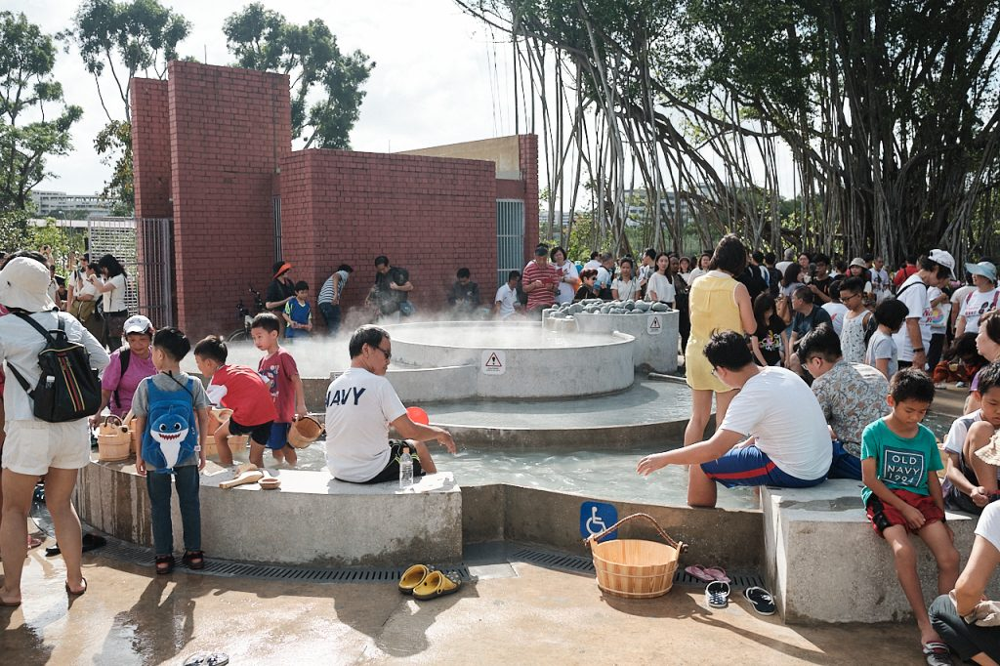

Sembawang Hot Spring Park is the one and only natural hot spring and a public park in Singapore. The hot spring was discovered in the early 1900s on the grounds owned by a Chinese merchant, Seah Eng Keong.
It was once a thermal bathhouse for Japanese soldiers, after their occupation of Singapore during World War II.
The land changed hands several times, before the Ministry of Defence returned the land to the state and renovation works began in August 2018.
It is now a 1.1-hectare park – nearly the size of one-and-a-half football fields – now has features such as a cascading pool, where members of the public can enjoy a foot bath.
Only warm foot bath in a natural hot spring in Singapore! Starting from the top is water as hot as 70 degrees and the lowest cascade is 40 degrees.

Why not try something fun and boil some eggs?